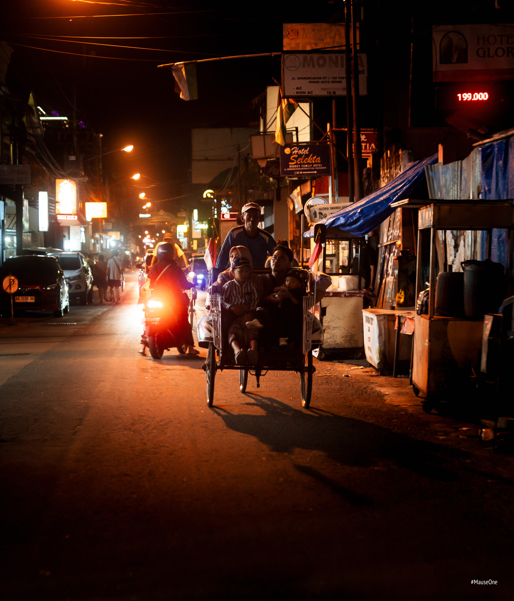

Shooting Yogyakarta
Yogyakarta was the first trip where I went somewhere specifically to shoot. Not a holiday with a camera in the bag — a trip with a purpose. I didn't fully know what that purpose was yet. I just knew I wanted to find out.




The first few days were uncomfortable. I didn't know how close to get, when to raise the camera, when to put it down. I shot too cautiously and came back with frames that felt safe and said nothing.


Somewhere in the middle of the trip something shifted. I stopped thinking about the camera and started paying attention to people. Not crowds, not streets — individual people. A face. A gesture. A moment between two people that had nothing to do with me. That's when the frames started feeling like something.


I came back from Yogyakarta knowing one thing I didn't know before — I want to be close. Not wide, not distant, not safe. I shoot best when there's a person in the frame and I'm close enough to see their eyes. Everything since has been about getting comfortable with that.